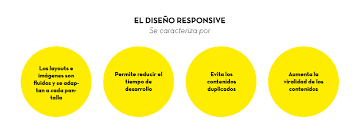

El diseño web responsive es una técnica de diseño y desarrollo de sitios web que permite que éstos se adapten automáticamente al tamaño de pantalla del dispositivo en el que se están visualizando.

El diseño responsive se refiere a la creación de sitios web que se adaptan automáticamente al tamaño de la pantalla del dispositivo en el que se están viendo, ya sea un teléfono móvil, una tableta o una computadora de escritorio. Algunos de los productos del diseño responsive son:
Experiencia de usuario mejorada: El diseño responsive proporciona una experiencia de usuario fluida y coherente en cualquier dispositivo. Los usuarios pueden acceder al contenido de su sitio web sin tener que hacer zoom, desplazarse horizontalmente o experimentar problemas de legibilidad.
Mayor alcance: Al tener un sitio web responsive, su contenido será fácilmente accesible para una audiencia más amplia. Cada vez más personas utilizan dispositivos móviles para navegar por internet y es importante que su sitio web se adapte a este cambio en el comportamiento del usuario.
Menos necesidad de mantenimiento: Al tener un sitio web responsive, solo necesitará actualizar y mantener un solo sitio web en lugar de tener que administrar varias versiones para diferentes dispositivos.
Mejora del SEO: Google y otros motores de búsqueda dan prioridad a los sitios web responsivos en los resultados de búsqueda para dispositivos móviles, lo que significa que su sitio web tendrá más visibilidad en los resultados de búsqueda.
Ahorro de costos: El diseño responsive elimina la necesidad de crear varias versiones de un sitio web para diferentes dispositivos, lo que puede reducir los costos de desarrollo y mantenimiento.